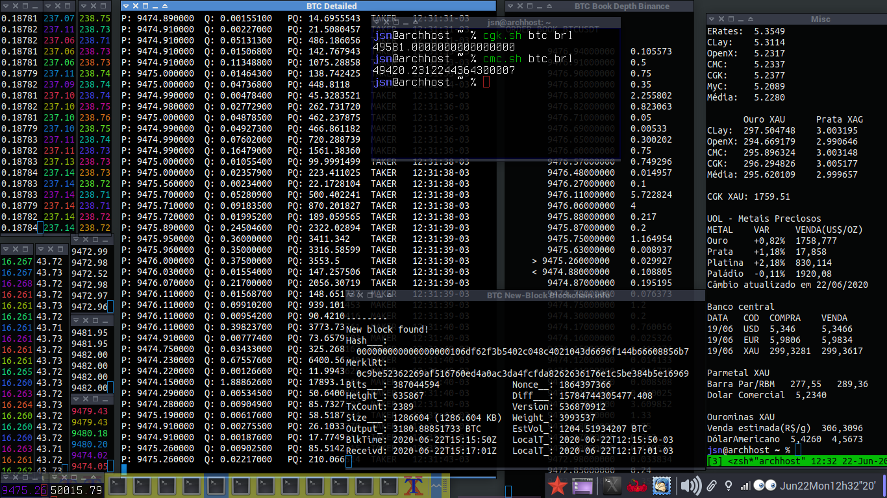

..
.
├── [9.4K] alpha.sh*
├── [2.9K] bakkt.sh*
├── [ 22K] binance.sh*
├── [ 33K] binfo.sh*
├── [1.6M] bitcoinBankOfChinaChinese.jpg
├── [1.3M] bitcoinBankOfChinaEnglish.jpg
├── [3.5K] bitfinex.sh*
├── [4.6K] bitstamp.sh*
├── [ 16K] brasilbtc.sh*
├── [ 33K] cgk.sh*
├── [5.8K] clay.sh*
├── [ 17K] cmc.sh*
├── [6.5K] erates.sh*
├── [6.4K] foxbit.sh*
├── [490K] git_screenshot1.png
├── [5.5K] hgbrasil.sh*
├── [ 34K] LICENSE.txt
├── [2.9K] metais.sh*
├── [ 29K] mkt_func.sh*
├── [4.9K] myc.sh*
├── [7.9K] novad.sh*
├── [7.9K] openx.sh*
├── [3.0K] ourominas.sh*
├── [3.2K] parmetal.sh*
├── [ 554] pricesroll2.sh*
├── [1.2K] pricesroll.sh*
├── [8.8K] README.md
├── [ 11K] stocks.sh*
├── [1.1K] tradingview.sh*
├── [111K] uol.sh*
├── [2.6K] wexplorer.sh*
├── [6.4K] whalealert.sh*
└── [1.2K] yahooscrape.sh*
 Fig. 1. Scripts on display: binance.sh, bitfinex.sh, binfo.sh, bitstamp.sh, cgk.sh, cmc.sh and others.
This is a repo related to crypto, bank currency and stock markets.
Run the script with -h for a help page. Check below for script descriptions,
download and basic instructions to run them.
These bash scripts mostly need curl. Some of them will work
if you have got wget instead, but not all of them.
Other important packages are jq and websocat or wscat for some scripts.
I cannot promise to follow up api changes and update these scripts once they start failing. So I may just remove failing scripts or leave them broken..
Este repo é relacionado com mercados de cripto, de moedas de
banco centrais e ações. Rode os scripts com -h para uma página de ajuda.
A maioria desses scripts de bash precisam do curl.
Alguns irão funcionar se você tiver somente o wget, mas não todos.
Outros pacotes importantes para alguns scripts são jq e
‘websocat’ ou wscat.
Não posso prometer acompanhar as alterações das APIs e atualizar esses scripts assim que começarem a falhar. Então, posso remover scripts com falha ou deixá-los quebrados..
| SCRIPT NAME | DESCRIPTION |
|---|---|
| alpha.sh | Stocks and currency rates from <alphaavantage.co>, most popular yahoo finance api alternative; free api key |
| bakkt.sh | Price and contract/volume tickers from bakkt public api |
| binance.sh | Binance public API, crypto converter, prices, book depth, coin ticker |
| binfo.sh | Blockchain explorer for bitcoin; uses <blockchain.info> and <blockchair.com> public apis; notification on new block found |
| bitstamp.sh | Bitstamp exchange public api for live trade prices/info |
| bitfinex.sh | Bitfinex exchange public api for live trade prices |
| brasilbtc.sh | Fetches bitcoin rates from brazilian exchanges public apis. Puxa cotações de bitcoin de agências de câmbio brasileiras de apis públicas |
| cgk.sh | <Coinggecko.com> public api, convert one crypto, bank/fiat or metal currency into any another, market ticker, cryptocurrency ticker. This is my favorite everyday-use script for all-currency rates! |
| clay.sh | <Currencylayer.com> central bank currency, precious metal and cryptocurrency converter, free api key |
| cmc.sh | <Coinmarketcap.com> convert any amount of one crypto, bank/fiat currency or metal into any another, NON-public api access |
| erates.sh | <Exchangeratesapi.io> public api, currency converter (same API as Alexander Epstein’s Bash-Snippets/currency) |
| foxbit.sh | FoxBit exchange public API rates. Acesso ao api público da Foxbit para cotações |
| hgbrasil.sh | Bovespa and tax rates. Cotações de ações da Bovespa e índices e taxas (CDI e SELIC) do api da hg brasil |
| myc.sh | <Mycurrency.net> public api, central bank currency rate converter |
| metais.sh | script to retrieve various rates, mostly using other scripts from this repo; there are some unique shell functions, though |
| mkt_func.sh | shell functions (bash and z-shell) to get some market data from public apis. Google Finance and Yahoo! Finance hacks.. these functions need improvement; source from this file to make these funtions available in your shell |
| novad.sh | puxa dados das apis públicas da NovaDax brasileira. fetch public api data from NovaDax brazilian enchange |
| openx.sh | <Openexchangerates.org> central bank currencies and precious metals converter, free api key |
| ourominas.sh | Ourominas (precious metals exchange) rates public api. Pega taxas da api pública da Ouro Minas |
| parmetal.sh | Parmetal (precious metals exchange) rates public api. Pega taxas da api pública da Parmetal |
| pricesroll.sh | script to open and arrange terminal windows with these market scripts on X |
| stocks.sh | <Financialmodelingprep.com> latest and historical stock and major index rates |
| tradingview.sh | just open some tradingview windows at the right screen position with xdotool |
| uol.sh | Fetches rates from uol service provider public api. Puxa dados de páginas da api pública do uol economia |
| wexplorer.sh | get some data from https://www.walletexplorer.com; this script usage is not very comprehensible and API server may be slow |
| whalealert.sh | latest whale transactions from <whale-alert.io>; this is such a bad api, very limited, not even worth having written a script for this, free api key |
| yahooscrape.sh | scrape some yahoo! finance tickers |
For a large list of Yahoo! Finance symbols, check my Yahoo! Finance scrapings
Please create free API keys and add them to shell environment or set them in the script head source code. Demo api keys were added to the scripts, however they may stop working at any time or get rate limited quickly.
Por favor, crie chaves de API grátis e as adicione no ambiente da shell ou as configure na cabeça do código-fonte dos scripts. Chaves para fins de demonstração foram adicionadas aos scripts, porém elas podem parar de funcionar a qualquer momento ou serem limitadas rapidamente.
bcalc.sh – a wrapper for bash calculator and zshell maths that keeps a record of results
Alexander Epstein’s currency_bash-snipet.sh uses the same API as erates.sh
https://github.com/alexanderepstein
MiguelMota’s Cointop for crypto currency tickers
https://github.com/miguelmota/cointop
8go’s CoinBash.sh for CoinMarketCap simple tickers (outdated)
https://github.com/8go/coinbash
Brandleesee’s Mop: track stocks the hacker way
https://github.com/mop-tracker/mop
Packages units and qalc (qalculate) also have got
bank currency rate convertion although they are not as powerful as my scripts.
None of these scripts are supposed to be used under truly professional constraints. Do your own research!
Nenhum desses scripts deve ser usado em meio profissional sem análise prévia. Faça sua própria pesquisa!
If useful, please consider sending me a nickle! =)
Se foi útil, considere me lançar um trocado!
bc1qlxm5dfjl58whg6tvtszg5pfna9mn2cr2nulnjr
On Ubuntu 20.04, you can install curl, jq and lolcat packages easily from the official repos.
The websocat and wscat packages may be a little more complicated..
To download a script, view it on Github.
Then, right-click on the Raw button and choose Save Link As … option.
Once downloaded (eg ~/Downloads/binance.sh),
you will need to mark the script as executable.
In GNOME, right-click on the file > Properties > Permissions
and check the Allow executing file as programme box, or
chmod +x ~/Downloads/binance.sh
Then cd to the folder where the script is located.
cd ~/Downloads
To execute it, be sure to add ‘./’ before the script name:
./binance.sh
or
bash binance.sh
Alternatively, you can clone this entire repo.
cd Downloads
git clone https://github.com/mountaineerbr/markets.git
chmod +x ~/Downloads/markets/*.sh
You can use bash aliases to individual scripts or place them under your $PATH .
Some scripts need free api keys. You can test these scripts with the builtin demo key, however that may stop working at any time.
No Ubuntu 20.04, pode-se instalar os pacotes curl, jq e lolcat
facilmente dos repos oficiais.
Já o pacote websocat e wscat podem ser um pouco mais complicado..
Para fazer o download de um script, abra-o/visualize-o no Github e
depois clique com o botão direito do mouse em cima do botão Raw e
escolha a opção Salvar Link Como….
Depois de feito o download (por exemplo, em ~/Downloads/binance.sh),
será necessário marcar o script como executável.
No GNOME, clicar com o botão direito em
cima do arquivo > Propriedades > Permissões e selecione a caixa
Permitir execução do arquivo como programa, ou
chmod +x ~/Downloads/binance.sh
Então, caminhe até a pasta onde script se encontra.
cd ~/Downloads
Para executá-lo, não se esqueça de adicionar ‘./’ antes do nome do script:
./binance.sh
ou
bash binance.sh</i>
Alternativeamente, você pode clonar este repo inteiro.
cd Downloads
git clone https://github.com/mountaineerbr/markets.git
chmod +x ~/Downloads/markets/*.sh
Você pode fazer bash aliases individuais para os scripts ou colocar os scripts sob seu $PATH .
Alguns scripts precisam de chaves de API gratuitas. Você pode testá-los com as chaves de APIs de demonstração adicionadas nos scripts, porém elas podem parar de funcionar a qualquer tempo.
Please consider sending me a nickle! = )
bc1qlxm5dfjl58whg6tvtszg5pfna9mn2cr2nulnjr
0 directories, 33 files
To download all files from a directory, try:
wget -r -np [URL]/
That is a shame GitHub limits file size to 100MB.
{kind=link}
{kind=link}
{kind=link}